Действия с группами объектов¶
Блиц Бюджет для Android позволяет выполнять действия сразу со множеством объектов. В качестве примера можно привести замену статьи сразу для нескольких операций. Групповые действия можно выполнять не только с операциями, но и с любыми справочниками.
Выбор объектов¶
Разберем выбор нескольких объектов на примере списка операций. Точно такие же действия можно выполнить в любом справочнике.
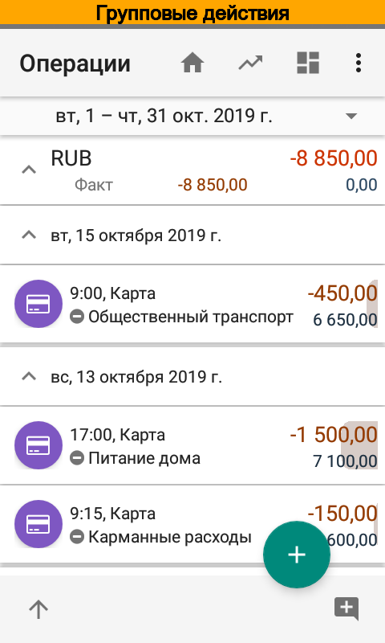{kind=link}
 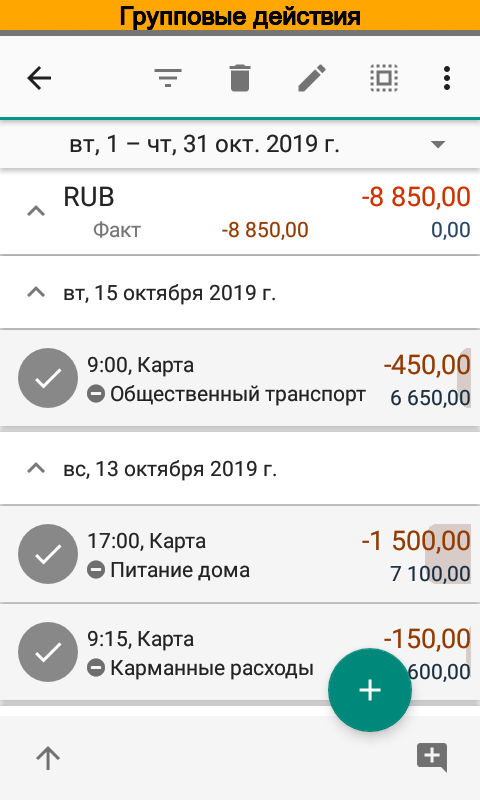
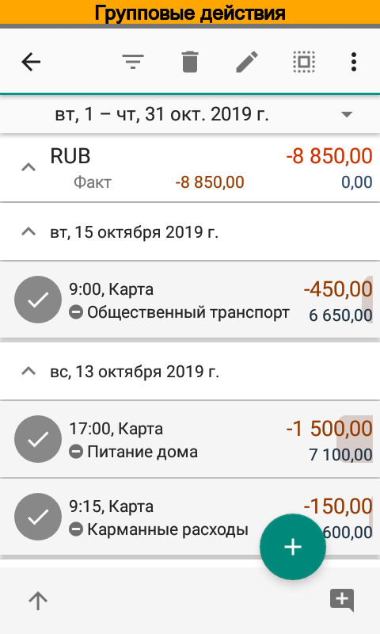
{kind=link}
Первом делом следует открыть список операций. Затем отметим галочками нужные операции. Если необходимо выбрать все операции, то достаточно отметить любую операцию из списка, а затем в панели действий выбрать .
Редактирование¶
Для редактирования выбранных операций следует нажать . Приложение откроет диалог, в котором указано количество выбранных элементов и поля, которые в этих элементах можно изменить. Так, для операций можно изменить дату и время, примечаний, аналитики и пр. поля. Изменения применяются только для модифицированных в диалоге редактирования полей.
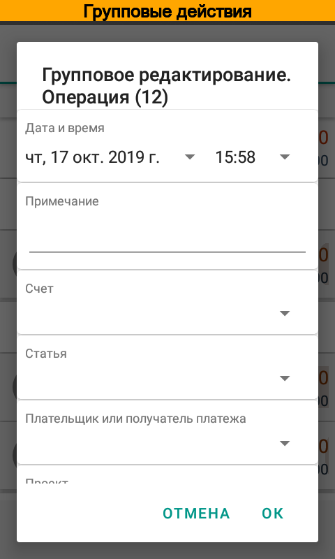{kind=link}
{kind=link}
Удаление¶
Для удаления выбранных операций следует нажать . После подтверждения приложение удалит выбранные элементы.
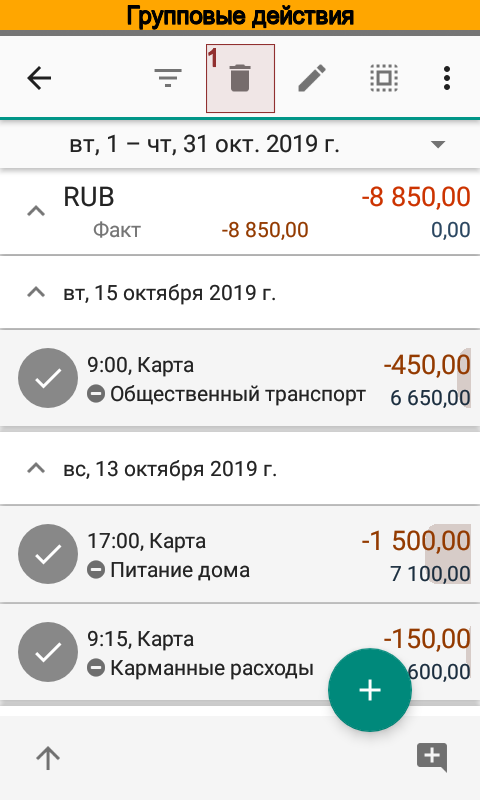 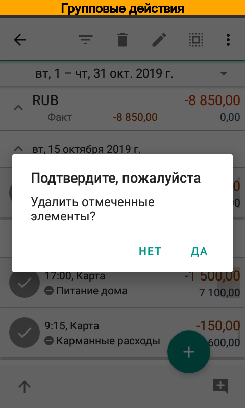{kind=link}
{kind=link}
Фильтр¶
На основании нескольких элементов можно создать фильтр. Это удобно, когда например, необходимо увидеть все операции с такими же как и отмеченных операций, статьями, контрагентами, проектами или персонами. В поля фильтра сразу будут скопированы значения из выбранных операций, останется лишь отметить нужные поля отбора галочками.
Для создания фильтра на основании выбранных элементов следует нажать .
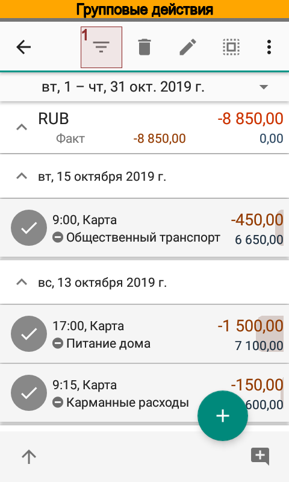 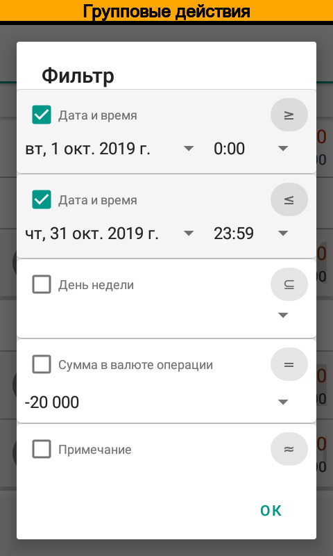{kind=link}
{kind=link}
Повторная отправка объектов при обмене¶
Иногда в случае коллективной работы необходимо повторить отправку операции или элементов справочника. Для этого служит пункт меню .
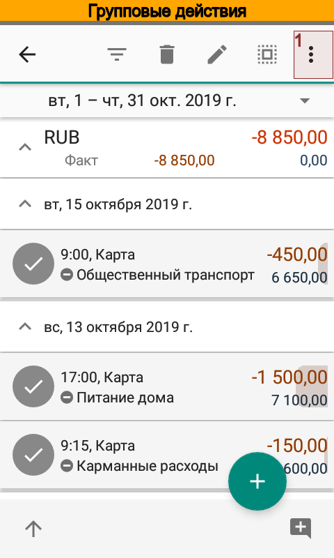 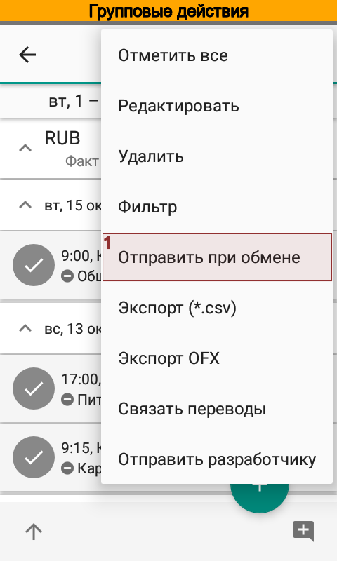 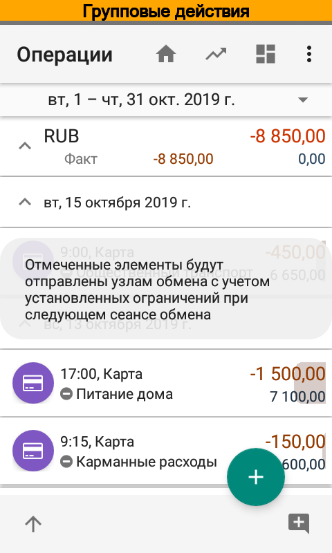{kind=link}
{kind=link}
{kind=link}
Экспорт в CSV и OFX¶
Выделенные операции можно экспортировать в файлы формата CSV и OFX, используя пункты меню и . В отличие от операций, элементы справочников можно экспортировать только в файлы формата CSV.
Примечание
Экспорт операций в OFX доступен только в версии Pro.
{kind=link}
{kind=link}
{kind=link}
Автоматическое связывание операций¶
Для точного учета переводов иногда требуется дополнительно связать операции. Например, такая операция может потребоваться, если перевод занесен вручную или в результате импорта в виде двух отдельных несвязанных операций. Для связывания операций отметьте хотя бы одну операцию и приложение автоматически определит завершающую операцию в переводе.
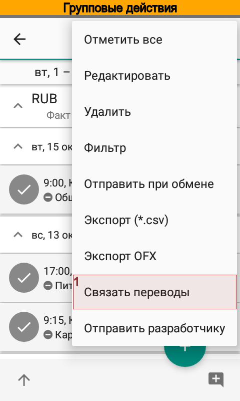{kind=link}
Примечание
Начиная с версии 6 при вводе перевода вручную обе операции автоматически связываются, поэтому нет необходимости дополнительно связывать такие операции. Связанные операции помечаются специальным значком.
Отправка исходных данных разработчику¶
Иногда требуется помощь разработчика для выяснения причин того или иного поведения приложения. В этих случаях для анализа обычно требуются исходные данные.
Отправить исходные данные можно через пункт меню . Перед отправкой приложение откроет предварительный просмотр письма и Вы можете увидеть и отредактировать содержание отправляемых данных. Таким образом можно избежать передачи конфиденциальной информации.
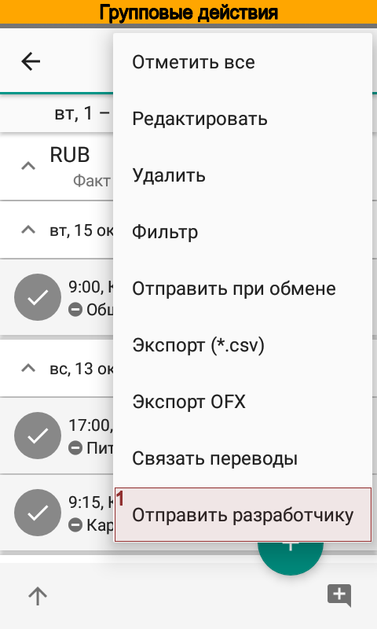{kind=link}
{kind=link}